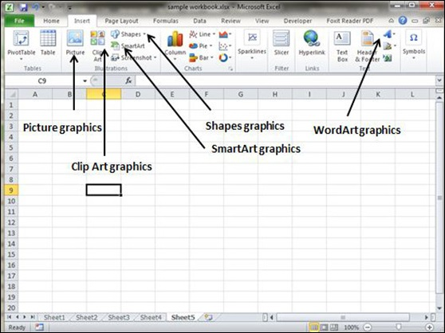
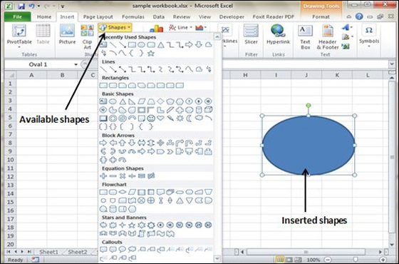
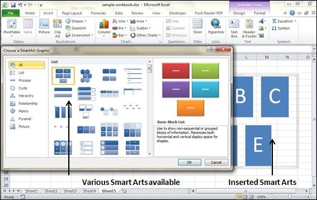
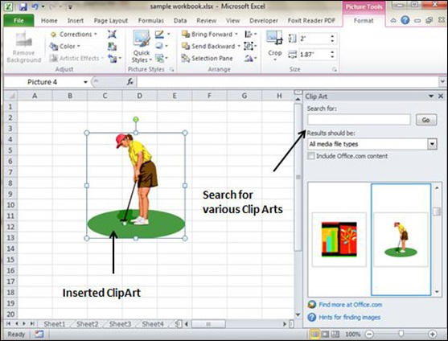
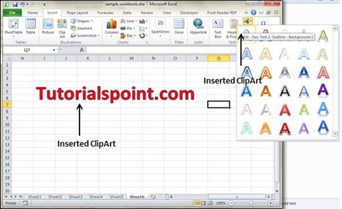

MS Excel supports various types of graphic objects like Shapes gallery, SmartArt, Text Box, and WordArt available on the Insert tab of the Ribbon.Graphics are available in the Insert Tab. See the screenshots below for various available graphics in MS Excel 2010.

Choose Insert Tab » Shapes dropdown.
Select the shape you want to insert. Click on shape to insert it.
To edit the inserted shape just drag the shape with the mouse. Shape will adjust the shape.

Choose Insert Tab » SmartArt.
Clicking SmartArt will open the SmartArt dialogue as shown below in the screen-shot. Choose from the list of available smartArts.
Click on SmartArt to Insert it in the worksheet.
Edit the SmartArt as per your need.

Choose Insert Tab » Clip Art.
Clicking Clip Art will open the search box as shown in the below screen-shot. Choose from the list of available Clip Arts.
Click on Clip Art to Insert it in the worksheet.

Choose Insert Tab » WordArt.
Select the style of WordArt, which you like and click it to enter a text in it.
